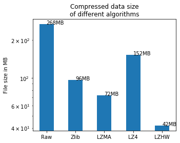

6 LZHW Comparison
LZHW Comparison with Other Compressors Available in Joblib library
I love joblib. I usually use it for parallelism for its great performance coming with a smooth simplicity.
I once saw this article in its documentation and it is about measuring the performance between different compressors available in it.
Because I am developing a compression library, I wanted to extend the code available in this article adding lzhw to the comparison, just to know where my library stands.
joblib uses three main techniques in this article Zlib, LZMA and LZ4.
I will use two data frames here: kddcup99 which is hosted on Machine Learning Repository and 1500000 Sales Records Data.
We will look at Compression and Decompression Duration and The compressed file sizes.
The downloaded compressed files are 17.5MB and 53MB respectively on the websites
Now Let's Begin with the exact code in joblib documentation:
KDD Data
import os
import os.path
import time
import pandas as pd
import lzhw
url = ("https://archive.ics.uci.edu/ml/machine-learning-databases/"
"kddcup99-mld/kddcup.data.gz")
names = ("duration, protocol_type, service, flag, src_bytes, "
"dst_bytes, land, wrong_fragment, urgent, hot, "
"num_failed_logins, logged_in, num_compromised, "
"root_shell, su_attempted, num_root, "
"num_file_creations, Z").split(', ')
data = pd.read_csv(url, names=names, nrows=1e6).reset_index()
print(data.shape)
# (1000000, 42)
We will consider dump as Compression and load as decompression in joblib's algorithms.
Now let's see time spent to dump the raw data:
from joblib import dump, load
pickle_file = './pickle_data.joblib'
start = time.time()
with open(pickle_file, 'wb') as f:
dump(data, f)
raw_dump_duration = time.time() - start
print("Raw dump duration: %0.3fs" % raw_dump_duration)
# Raw dump duration: 0.898s
Raw data size:
raw_file_size = os.stat(pickle_file).st_size / 1e6
print("Raw dump file size: %0.3fMB" % raw_file_size)
# Raw dump file size: 624.035MB
Finally, let's measure the time spent to load the dumped raw data:
start = time.time()
with open(pickle_file, 'rb') as f:
load(f)
raw_load_duration = time.time() - start
print("Raw load duration: %0.3fs" % raw_load_duration)
# Raw load duration: 0.900s
We will literally do the three steps for all the algorithms and visualize the results and then do the same exercise for the other dataframe
Now let's have all the algorithms calls in one code block:
## ZLIB
start = time.time()
with open(pickle_file, 'wb') as f:
dump(data, f, compress='zlib')
zlib_dump_duration = time.time() - start
print("Zlib dump duration: %0.3fs" % zlib_dump_duration)
# Zlib dump duration: 2.362s
zlib_file_size = os.stat(pickle_file).st_size / 1e6
print("Zlib file size: %0.3fMB" % zlib_file_size)
# Zlib file size: 10.227MB
start = time.time()
with open(pickle_file, 'rb') as f:
load(f)
zlib_load_duration = time.time() - start
print("Zlib load duration: %0.3fs" % zlib_load_duration)
# Zlib load duration: 1.920s
## LZMA
start = time.time()
with open(pickle_file, 'wb') as f:
dump(data, f, compress=('lzma', 3))
lzma_dump_duration = time.time() - start
print("LZMA dump duration: %0.3fs" % lzma_dump_duration)
# LZMA dump duration: 11.782s
lzma_file_size = os.stat(pickle_file).st_size / 1e6
print("LZMA file size: %0.3fMB" % lzma_file_size)
# LZMA file size: 4.453MB
start = time.time()
with open(pickle_file, 'rb') as f:
load(f)
lzma_load_duration = time.time() - start
print("LZMA load duration: %0.3fs" % lzma_load_duration)
# LZMA load duration: 2.910s
## LZ4
start = time.time()
with open(pickle_file, 'wb') as f:
dump(data, f, compress='lz4')
lz4_dump_duration = time.time() - start
print("LZ4 dump duration: %0.3fs" % lz4_dump_duration)
# LZ4 dump duration: 0.723s
lz4_file_size = os.stat(pickle_file).st_size / 1e6
print("LZ4 file size: %0.3fMB" % lz4_file_size)
# LZ4 file size: 17.693MB
start = time.time()
with open(pickle_file, 'rb') as f:
load(f)
lz4_load_duration = time.time() - start
print("LZ4 load duration: %0.3fs" % lz4_load_duration)
# LZ4 load duration: 1.524s
## LZHW
start = time.time()
lzhw_data = lzhw.CompressedDF(data)
lzhw_data.save_to_file("lzhw_data.txt")
lzhw_compression_duration = time.time() - start
print("LZHW compression duration: %0.3fs" % lzhw_compression_duration)
# LZHW compression duration: 37.742s
lzhw_file_size = os.stat("lzhw_data.txt").st_size / 1e6
print("LZHW file size: %0.3fMB" % lzhw_file_size)
# LZHW file size: 2.839MB
start = time.time()
lzhw_d = lzhw.decompress_df_from_file("lzhw_data.txt")
lzhw_d_duration = time.time() - start
print("LZHW decompression duration: %0.3fs" % lzhw_d_duration)
# LZHW decompression duration: 9.007s
Interesting Results!
Let's visualize it:
import numpy as np
import matplotlib.pyplot as plt
N = 5
load_durations = (raw_load_duration, zlib_load_duration,
lzma_load_duration, lz4_load_duration, lzhw_d_duration)
dump_durations = (raw_dump_duration, zlib_dump_duration,
lzma_dump_duration, lz4_dump_duration, lzhw_compression_duration)
file_sizes = (raw_file_size, zlib_file_size, lzma_file_size, lz4_file_size, lzhw_file_size)
ind = np.arange(N)
width = 0.5
plt.figure(1, figsize=(5, 4))
p1 = plt.bar(ind, dump_durations, width)
p2 = plt.bar(ind, load_durations, width, bottom=dump_durations)
plt.ylabel('Time in seconds')
plt.title('Compression & Decompression durations\nof different algorithms')
plt.xticks(ind, ('Raw', 'Zlib', 'LZMA', "LZ4", "LZHW"))
plt.legend((p1[0], p2[0]), ('Compression duration', 'Decompression duration'))

The time spent by LZHW to compress seems a little bit higher but let's see the result compressed file:
plt.figure(2, figsize=(5, 4))
plt.bar(ind, file_sizes, width, log=True)
plt.ylabel('File size in MB')
plt.xticks(ind, ('Raw', 'Zlib', 'LZMA', "LZ4", "LZHW"))
plt.title('Compressed data size\nof different algorithms')
for index, value in enumerate(file_sizes):
plt.text(index, value, str(round(value)) + "MB")

LZHW performs much better than all other, while the difference in seconds is not that big
1.5M Sales Data
Let's now do the same steps as above on the second data:
data = pd.read_csv("1500000 Sales Records.csv")
print(data.shape)
pickle_file = './pickle_data.joblib'
start = time.time()
with open(pickle_file, 'wb') as f:
dump(data, f)
raw_dump_duration = time.time() - start
print("Raw dump duration: %0.3fs" % raw_dump_duration)
raw_file_size = os.stat(pickle_file).st_size / 1e6
print("Raw dump file size: %0.3fMB" % raw_file_size)
start = time.time()
with open(pickle_file, 'rb') as f:
load(f)
raw_load_duration = time.time() - start
print("Raw load duration: %0.3fs" % raw_load_duration)
## ZLIB
start = time.time()
with open(pickle_file, 'wb') as f:
dump(data, f, compress='zlib')
zlib_dump_duration = time.time() - start
print("Zlib dump duration: %0.3fs" % zlib_dump_duration)
zlib_file_size = os.stat(pickle_file).st_size / 1e6
print("Zlib file size: %0.3fMB" % zlib_file_size)
start = time.time()
with open(pickle_file, 'rb') as f:
load(f)
zlib_load_duration = time.time() - start
print("Zlib load duration: %0.3fs" % zlib_load_duration)
## LZMA
start = time.time()
with open(pickle_file, 'wb') as f:
dump(data, f, compress=('lzma', 3))
lzma_dump_duration = time.time() - start
print("LZMA dump duration: %0.3fs" % lzma_dump_duration)
lzma_file_size = os.stat(pickle_file).st_size / 1e6
print("LZMA file size: %0.3fMB" % lzma_file_size)
start = time.time()
with open(pickle_file, 'rb') as f:
load(f)
lzma_load_duration = time.time() - start
print("LZMA load duration: %0.3fs" % lzma_load_duration)
## LZ4
start = time.time()
with open(pickle_file, 'wb') as f:
dump(data, f, compress='lz4')
lz4_dump_duration = time.time() - start
print("LZ4 dump duration: %0.3fs" % lz4_dump_duration)
lz4_file_size = os.stat(pickle_file).st_size / 1e6
print("LZ4 file size: %0.3fMB" % lz4_file_size)
start = time.time()
with open(pickle_file, 'rb') as f:
load(f)
lz4_load_duration = time.time() - start
print("LZ4 load duration: %0.3fs" % lz4_load_duration)
## LZHW
start = time.time()
lzhw_data = lzhw.CompressedDF(data)
lzhw_data.save_to_file("lzhw_data.txt")
lzhw_compression_duration = time.time() - start
print("LZHW compression duration: %0.3fs" % lzhw_compression_duration)
lzhw_file_size = os.stat("lzhw_data.txt").st_size / 1e6
print("LZHW file size: %0.3fMB" % lzhw_file_size)
start = time.time()
lzhw_d = lzhw.decompress_df_from_file("lzhw_data.txt")
lzhw_d_duration = time.time() - start
print("LZHW decompression duration: %0.3fs" % lzhw_d_duration)
# (1500000, 14)
# Raw dump duration: 1.294s
# Raw dump file size: 267.591MB
# Raw load duration: 1.413s
# Zlib dump duration: 6.583s
# Zlib file size: 96.229MB
# Zlib load duration: 2.430s
# LZMA dump duration: 76.526s
# LZMA file size: 72.476MB
# LZMA load duration: 9.240s
# LZ4 dump duration: 1.984s
# LZ4 file size: 152.374MB
# LZ4 load duration: 2.135s
# LZHW compression duration: 81.522s
# LZHW file size: 45.755MB
# LZHW decompression duration: 48.904s
Now let's visualize the new results:
import numpy as np
import matplotlib.pyplot as plt
N = 5
load_durations = (raw_load_duration, zlib_load_duration,
lzma_load_duration, lz4_load_duration, lzhw_d_duration)
dump_durations = (raw_dump_duration, zlib_dump_duration,
lzma_dump_duration, lz4_dump_duration, lzhw_compression_duration)
file_sizes = (raw_file_size, zlib_file_size, lzma_file_size, lz4_file_size, lzhw_file_size)
ind = np.arange(N)
width = 0.5
plt.figure(1, figsize=(5, 4))
p1 = plt.bar(ind, dump_durations, width)
p2 = plt.bar(ind, load_durations, width, bottom=dump_durations)
plt.ylabel('Time in seconds')
plt.title('Compression & Decompression durations\nof different algorithms')
plt.xticks(ind, ('Raw', 'Zlib', 'LZMA', "LZ4", "LZHW"))
plt.legend((p1[0], p2[0]), ('Compression duration', 'Decompression duration'))

plt.figure(2, figsize=(5, 4))
plt.bar(ind, file_sizes, width, log=True)
plt.ylabel('File size in MB')
plt.xticks(ind, ('Raw', 'Zlib', 'LZMA', "LZ4", "LZHW"))
plt.title('Compressed data size\nof different algorithms')
for index, value in enumerate(file_sizes):
plt.text(index, value, str(round(value)) + "MB")

By far LZHW outperforms others with acceptable time difference